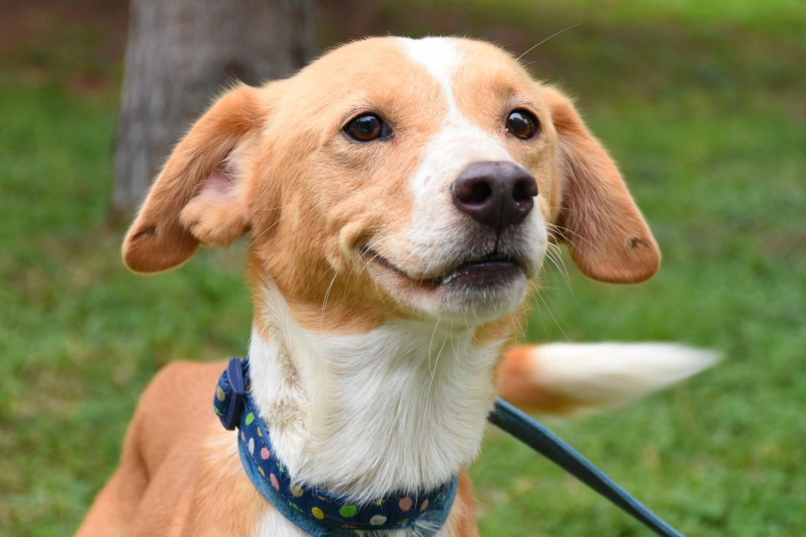
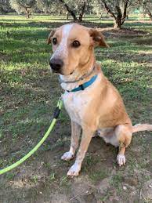
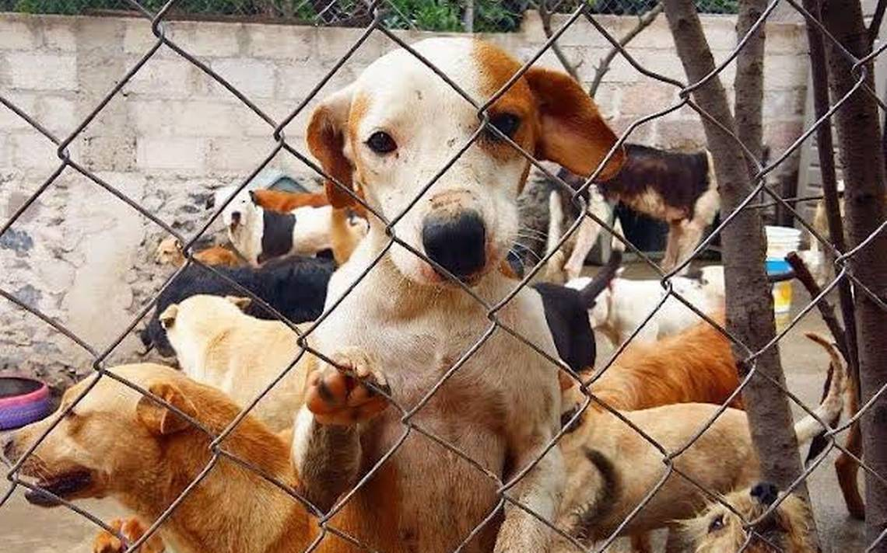
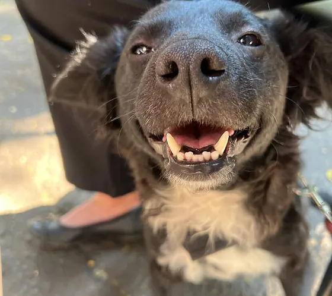
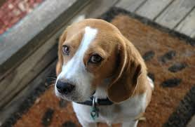
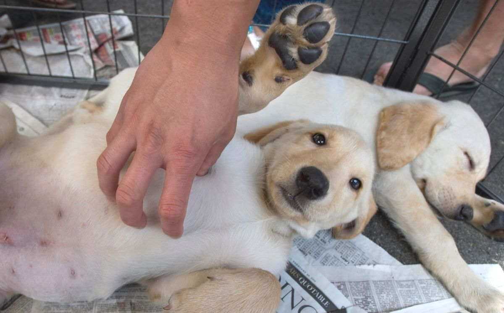

Nuestros perros
Aquí podra ver todos los perros que actualmente estan dentro del albergue Planeta Animal. En Planeta Animal tenemos como objetivo buscarle hogar a nuestros perritos, son muy pocos los que podrían darse en adopción ya que estos deben estar al 100% recuperados. Los perros que pueden ser elegidos para adoptar son perros que no tienen cancer, o de la tercera edad o alguno que tenga una enfermedad muy costosa o de difícil tratamiento.
Requisitos Para La adopción
- Ser mayor de edad y presentar una identificación oficial con fotografía.
- Completar una solicitud de adopción y proporcionar información sobre su hogar, estilo de vida y antecedentes con animales de compañía.
- Demostrar que se cuenta con las condiciones adecuadas para el cuidado del animal, como tener un espacio suficiente para que el animal se mueva libremente y esté seguro, un lugar seguro para dormir, agua y alimento fresco, tiempo suficiente para proporcionarle atención diaria y recursos financieros para cubrir los gastos necesarios de atención veterinaria, alimentación y otros cuidados.
- Firmar un acuerdo de adopción donde se establecen las responsabilidades y compromisos adquiridos por el adoptante, tales como no maltratar al animal, no utilizarlo para fines ilegales, mantener su bienestar y seguridad, etc.